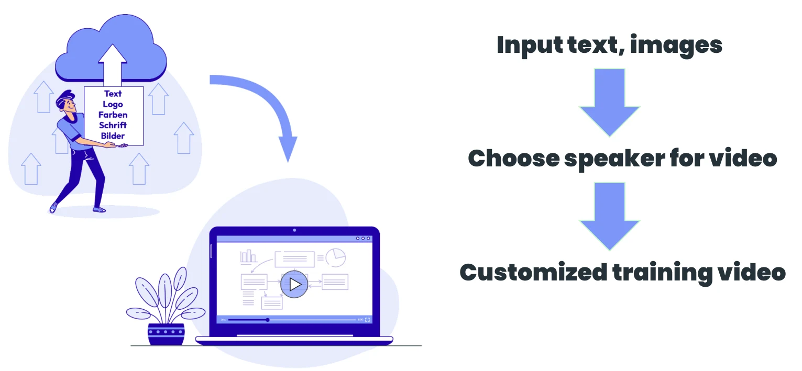
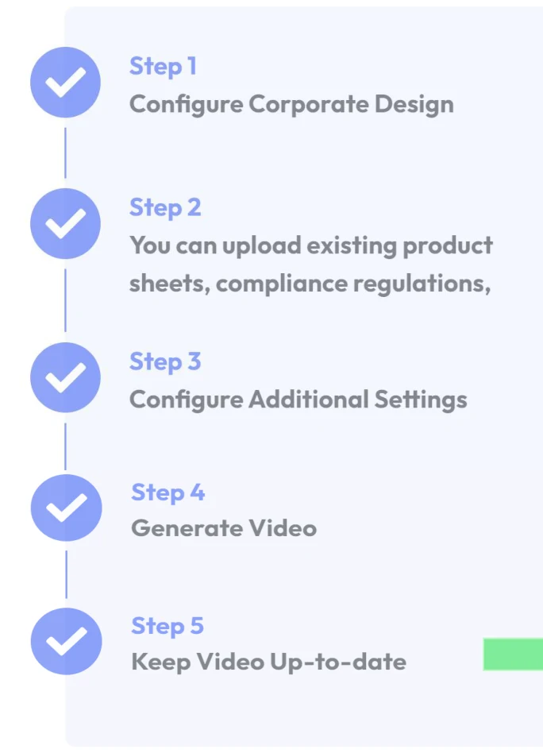
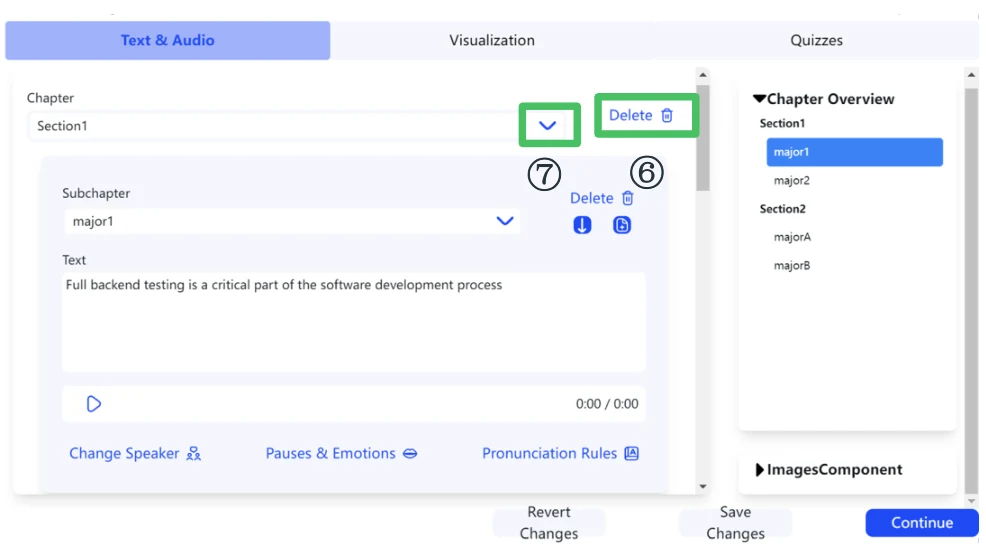
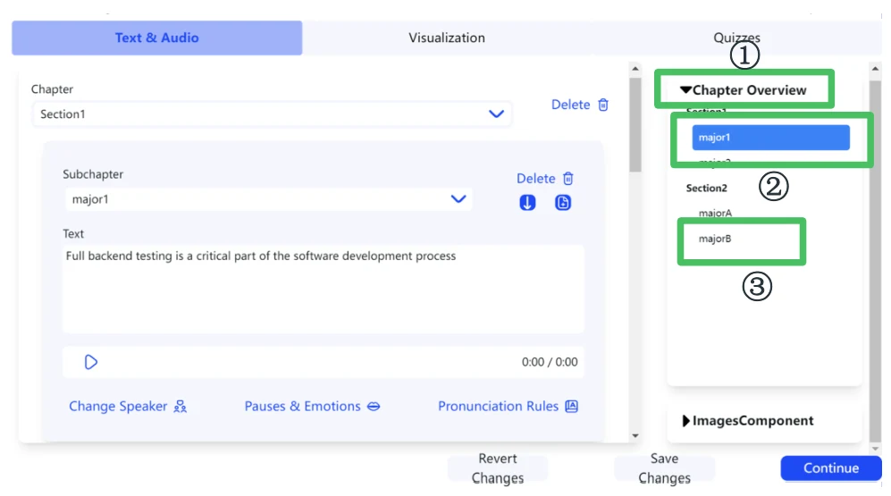
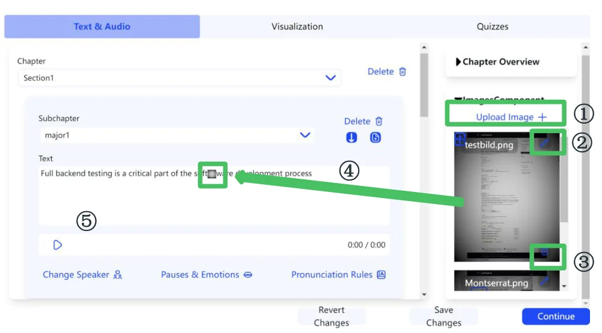
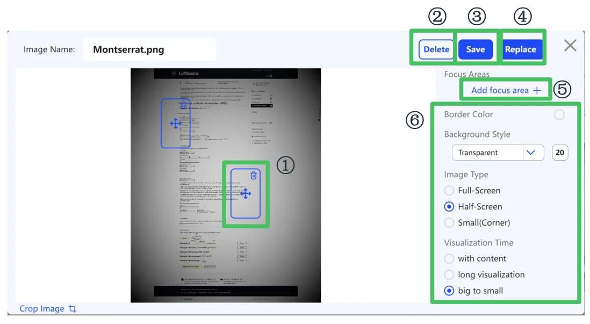
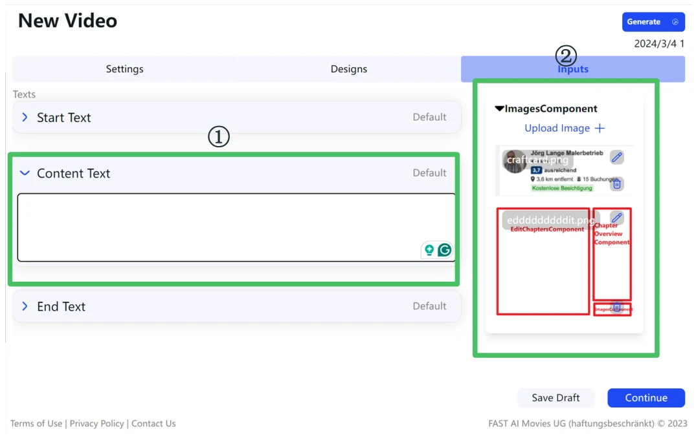

Web application · FAST AI Movies
FAST AI Movie Web
A web platform that turns text and images into customized training videos with an AI speaker – and lets users edit every part of the generated video.
Project overview
- Input text and images
- →
- Choose a speaker for the video
- →
- Customized training video


User workflow
- Configure corporate design
- Upload existing product sheets, compliance regulations, …
- Configure additional settings
- Generate the video
- Keep the video up to date
Our work
Generating videos and making them editable – including chapter texts, audio, slides, icons and quizzes – plus corporate design configuration, admin settings, asset management and internal visualization.
Chapter edit function

| # | Control |
|---|---|
| ① | Add a new subchapter (major) |
| ② | Choose a subchapter title |
| ③ | A: move subchapter up · B: move subchapter down · C: add a new subchapter |
| ④ | Delete a subchapter |
| ⑤ | Play audio |
| ⑥ | Choose a chapter title |
| ⑦ | Delete the whole chapter |
Chapter overview function

- Click to collapse or expand the chapter overview.
- The currently viewed subchapter is highlighted.
- Click to jump to the corresponding subchapter.
Image component function

- Upload an image from local storage.
- Click to edit an image.
- Delete an image.
- Drag an image from the image list into the text area to insert it.
Image edit function

- Edit focus areas – move, resize and delete.
- Delete the current image.
- Duplicate as a new image with the current changes.
- Replace the current image with the current changes.
- Add a new focus area.
- Edit image settings (border color, background style, image type: full-screen / half-screen / small corner, visualization time).
Integration of reusable components

- Editable textarea component.
- Image component (with drag-to-insert and image editing).